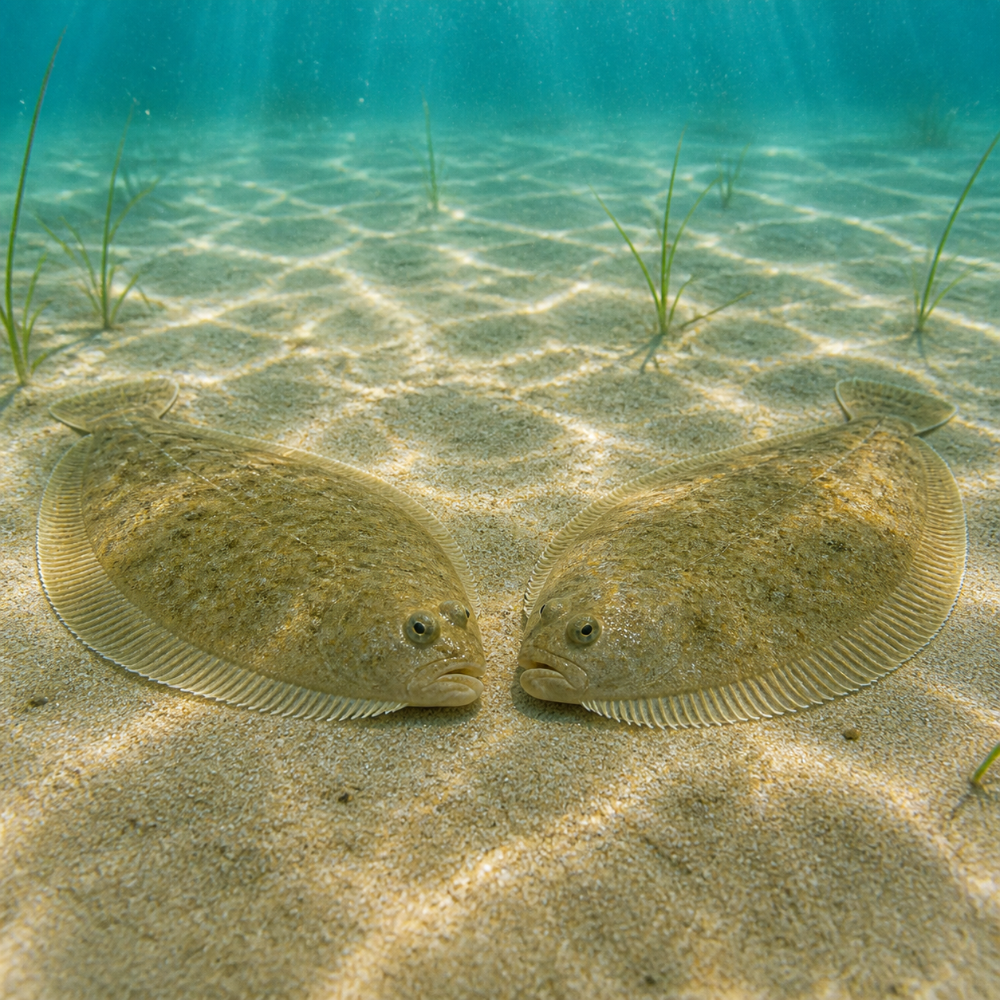

Pun IntendedHard · clever
A pun beneath the surface
What familiar phrase does this underwater pair represent?
Reveal answer
Sole mates. They are a pair of sole fish—and they appear to be mates. The less-obvious fish meaning makes this version a much stronger visual pun.